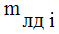
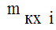
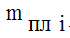
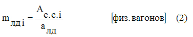
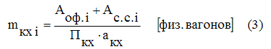
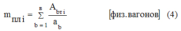
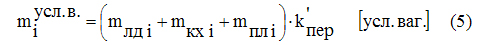
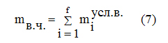
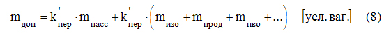

РАСЧЁТ ВОИНСКОЙ ЧАСТИ НА ПЕРЕВОЗКУ ЖЕЛЕЗНОДОРОЖНЫМ ТРАНСПОРТОМ
1.3 Осуществляется распределение подразделений воинской части по поездам (эшелонам).
2. Пример расчёта на перевозку воинской части железнодорожным транспортом
2.3 Установление состава, длины и массы поездов с в/эшелонами.
где:
 — потребность физических вагонов для перевозки i-го подразделения воинской части;
— потребность физических вагонов для перевозки i-го подразделения воинской части;



При этом



где: Ас.с. i — количество сержантов и солдат в i–м подразделении воинской части;
алд — норма размещения сержантов и солдат в людском вагоне;
Aоф. i — количество офицеров в i-м подразделении воинской части;
Пкх — производительность одной походной автокухни (кухня-автоприцеп рассчитана на приготовление горячей пищи для 100 — 125 человек);
акх — норма размещения походных автокухонь в вагоне-кухне;
Аbт i — количество военной техники b-го вида в i-м подразделении воинской части;
ab i — норма размещения военной техники b-го вида на железнодорожной платформе;
b — число различных видов военной техники в подразделении.
Примечание: на этом (первом) этапе расчёта на перевозку воинской части железнодорожным транспортом определение параметров mлд i , mкх i и mпл i осуществляется с точностью до одного знака после запятой.
Потребность подвижного состава в условных вагонах для перевозки i-го подразделения воинской части (mi) определяется путём перевода физических вагонов в условные:

где: — коэффициент перевода крытых четырёхосных вагонов и платформ в условные, =1,05;

где: mв.ч. — потребность подвижного состава в условных вагонах для перевозки всех подразделений воинской части,

mв.п. — допустимая длина поезда с воинским эшелоном (в условных вагонах);
mдоп.— количество вагонов (в условном исчислении), дополнительно включаемых в состав каждого поезда с воинским эшелоном;
f — число подразделений в воинской части.
Перевод физических вагонов, дополнительно включаемых в состав каждого поезда с воинским поездом, в условные осуществляется по формуле:

где: mпасс — количество пассажирских вагонов, включаемых в состав поезда с воинским эшелоном;
 —
коэффициент перевода пассажирского вагона в условные,
—
коэффициент перевода пассажирского вагона в условные,  =
1,75;
=
1,75;
mизо — количество вагонов-изоляторов, включаемых в состав поезда с воинским эшелоном;
mпрод — количество вагонов - продскладов, включаемых в состав поезда с воинским эшелоном;
mПВО — количество четырёхосных платформ (крытых вагонов), включаемых в состав поезда с воинским эшелоном для размещения сил и средств противовоздушной обороны;
1.3 Осуществляется распределение подразделений воинской части по поездам (эшелонам).
Распределение воинской части по поездам выполняется согласно требованиям, предъявляемым к расчёту на перевозку воинской части железнодорожным транспортом. При этом особое внимание уделяется требованию по недопущению превышения потребного подвижного состава (в условных вагонах) для перевозки всех подразделений, включаемых в каждый поезд (воинский эшелон), допустимой длины поезда с учётом дополнительно используемых вагонов mдоп. :

Устанавливается состав, длина и масса поездов с воинскими эшелонами.
Состав любого j-го поезда с воинским эшелоном устанавливается на основе суммирования и округления до большего целого значения количества физических вагонов каждого рода (предназначения), необходимых для перевозки всех включаемых в эшелон подразделений. Кроме того, к определённому числу физических вагонов обязательно добавляются дополнительно включаемые, в любой поезд с воинским эшелоном, вагоны.
Длина j-го поезда с воинским эшелоном (в условных вагонах) рассчитывается по формуле:

где: mлд , mкх , mпл — количество физических вагонов, соответственно, людских, вагонов-кухонь и платформ, необходимых для перевозки подразделений, входящих в j-й воинский эшелон;
mпасс , mизо , mпрод , mПВО, … — количество физических вагонов, соответственно, пассажирских, вагонов-изоляторов, вагонов-продскладов,
вагонов для размещения сил и средств противовоздушной обороны, дополнительно включаемых в поезд с воинским эшелоном.
Масса j-го поезда (брутто) с воинским эшелоном Qj определяется массой (тары) вагонов Qтj и массой (нетто) перевозимого Qнj :

Масса тары j-го поезда с воинским эшелоном устанавливается по формуле:

где: — масса тары пассажирского вагона (для цельнометаллического вагона с открытым купе и 56 местами для лежания =54 т);
— масса тары четырёхосного крытого вагона, =23,0 т;
 —
масса тары четырёхосной платформы,
—
масса тары четырёхосной платформы,  =21,0
т.
=21,0
т.
Масса нетто j-го поезда с воинским эшелоном зависит от количества
и расчётной массы (нетто) пассажирских  ,
людских вагонов (вагонов-изоляторов)
,
людских вагонов (вагонов-изоляторов)  ,
вагонов-кухонь ,
вагонов – продскладов
,
вагонов-кухонь ,
вагонов – продскладов  ,
а также от количества и массы военной техники, перевозимой в составе
рассматриваемого воинского эшелона:
,
а также от количества и массы военной техники, перевозимой в составе
рассматриваемого воинского эшелона:

где: Abj — количество военной техники b-го вида, перевозимой в составе j-го воинского эшелона;
— масса единицы военной техники b-го вида.
Расчётная масса (нетто) для крытых вагонов, занятых под перевозку людей и действующих походных кухонь, принимается равной 33 т, для пассажирских купейных — 4 т, для пассажирских не купейных со спальными местами —6 т, для пассажирских не купейных с местами для сидения — 8т.
Если в результате расчёта фактическая длина или масса хотя бы одного поезда с воинским эшелоном окажется выше допустимого значения и никакой способ сокращения потребного подвижного состава для перевозки этого эшелона (уплотнённая погрузка техники, размещение путевого запаса продовольствия в вагонах-кухнях или в кузовах автомашин, посадка сержантов и солдат на свободные места в пассажирском вагоне, предназначенном для перевозки должностных лиц эшелона) не приводит к исправлению данного положения необходимо перераспределить подразделения воинской части между эшелонами (поездами) — вернуться к третьему этапу расчёта;
Заполненный бланк “Расчёта на перевозку воинской части железнодорожным транспортом” подписывается начальником штаба и утверждается командиром воинской части.
2. Пример расчёта на перевозку воинской части железнодорожным транспортом

где: mфизi – потребность физических вагонов для перевозки i-го подразделения части;
mлдi – потребность людских вагонов для перевозки сержантов и солдат i-го подразделения воинской части;
mkxi – потребность вагонов-кухонь для перевозки действующих походных кухонь, предназначенных для обеспечения горячей пищи пищей всего личного состава (офицеров, сержантов и солдат) i – го подразделения воинской части;
mплi – потребность платформ при перевозке военной техники i-го подразделения.

где: Ассi – количество сержантов и солдат в i-м подразделении;
асс – норма размещения сержантов и солдат в людском вагоне;
Aофi – количество офицеров в i-м подразделении;
 – производительность одной автокухни, чел./кх;
– производительность одной автокухни, чел./кх;
akx – норма размещения походных автокухонь в вагоне кухне;
Аbi – количество военной техники b-го вида в i-м подразделении;
аb – норма размещения военной техники b-го на железнодорожной платформе (согласно учебному заданию);
b – общее число различныз видов техники в подразделении.
При расчете потребности платформ по формуле следует учитывать возможность уплотненной погрузки военной техники – установку автомобилей над сцепами платформ, на которых размещаются танки. В случае допустимости данного способа уплотненной погрузки техники расчет потребности подвижного состава для соответствующего количества автомашин выполнять не требуется.
Потребность людских вагонов для перевозки сержантов и солдат каждого подразделения воинской части.
Перевозка длится более трёх суток => асс – норма размещения сержантов и солдат в людском вагоне = 56 чел;

Потребность вагонов-кухонь для перевозки действующих походных кухонь, предназначенных для обеспечения горячей пищи пищей всего личного состава (офицеров, сержантов и солдат) каждого подразделения воинской части.
 –
производительность одной автокухни =125 чел./кх;
–
производительность одной автокухни =125 чел./кх;
akx – норма размещения походных автокухонь в вагоне кухне=2;

Потребность платформ при перевозке военной техники каждого подразделения.

Потребность подвижного состава (в условных вагонах) для перевозки i-го подразделения mi определяется путем перевода физических вагонов в условные:

где K`пер – коэффициент перевода крытых вагонов и железнодорожных платформ в условные вагоны, K`пер=1,05.
mштаб = (0,8+0,2+5)*1.05=6,3;
m1 = m2 = m3 = (1,0+0,2+11,8)*1.05=13,7;
m4 = (0,7+0,1+7,7)*1.05=8,9;
m5 = m6 = (0,6+0,1+14,4)*1.05=15,9;
m7 = m8 = m9 = (0,5+0,1+6,8)*1.05=7,8;
m10 = (0,5+0,1+8,2)*1.05=9,2;
m11 = (0,8+0,2+14)*1.05=15,8;
Результаты вычисления по первому этапу расчета на перевозку воинской части железнодорожным транспортом сводятся в таблицу 1 и указываются с точностью до 0,1.


где: mвч – потребность подвижного состава ( в усл. ваг.) для перевозки всех подразделений, рассматриваемой в/ч; (mвч = 136,5 из табл. 1)
mвп – допустимая длина поезда с в/эш в усл. ваг. (согласно учебному заданию, допустимая длина поезда с в/эшелоном = 57 вагонов и макс. грузоподъёмность = 3000 т);
mдоп – кол-во ваг. в усл. исчислении, дополнительно включаемых в состав каждого поезда с в/эш.
Согласно учебному заданию, в каждый поезд с в/эш. обязательно включаются 1 пасс. ваг. для размещения должностных лиц
mдоп = 1,75 (усл. ваг.)
где: 1,75 – коэфф. перевода Кпер” пассажирских вагонов в условные.
Nвч = 136,5/(57-1,75) = 2,5 => Nвч = 3 эш.
Осуществляется распределение подразделений в/ч по в/эш.
Распределение подразделений выполняется между тем кол-вом эшелонов, которое было определено по формуле с округлением до большего целого значения. При распределении подразделений в/ч по эшелонам необходимо соблюдать следующие требования: каждое подразделение может перевозиться в составе только одного в/эш.; суммарная длина подвижного состава (в усл. исчисл.), необходимого для перевозки включаемых в эшелон подразделений, не должна превышать допустимой длины поезда с в/эш.; кол-во эшелонов с тяжёлой (гусеничной) в/техникой должно быть минимальным; в каждом эшелоне (по возможности) должны быть необходимые силы и средства для организации ПВО.
Результаты распределения подразделений в/ч по эшелонам отражаются в таблице.

2.3 Установление состава, длины и массы поездов с в/эшелонами.
Состав поезда с в/эш устанавливается на основе суммирования и округления до большего целого значения количества физических вагонов каждого рода (типа), необходимых согл. табл. для перевозки включаемых в рассматриваемый эшелон воинских подразделений.

Кроме того, к определённому числу физических вагонов обязательно добавляются дополнительно включаемые в любой поезд с в/эшелоном - 1 пасс и 1 платформа (если в качестве средств ПВО эшелона используются ЗСУ или зенитные пушки).
Длина поезда с в/эш рассчитывается по формуле:

где: mпасс, mлдj,mкхj, mплj – кол- во физ вагонов, необходимых для перевозки j-ого в/эшелона рассматриваемой в/ч.
Масса поезда (брутто) с j-ым в/эшелоном Qj определяется массой (тары) вагонов QTj и массой (нетто) в/техники и л/с QHj :
Qj = QTj + QHj;
масса (тары) поезда QTj устанавливается по формуле:

где: qТпасс – масса тары пасс. вагона (qТпасс = 54,0 т),
qТкр – масса тары крытого вагона = 23,0 т,
qТпл – масса тары платформы = 21,0 т.
Масса нетто поезда с j-ым в/эшелоном зависит от кол-ва и расчётной массы (нетто) пасс. qнпасс , людских qнлд , а также от кол-ва и массы в/техники, перевозимой в составе рассматриваемого эшелона :

где: Aвj – кол-во единиц в/техники военного вида, перевозимых в составе j-ого в/эшелона;
qнв – масса (нетто) в/техники военного вида (указана в учебном задании).
Согласно Наставлению, расчётная масса (нетто) пасс = 6,0 т, лд. и кх. = 33,0 т.
Если в результате расчётов фактическая длина или масса хотя бы одного поезда с в/эшелоном окажется выше допустимого значения, необходимо перераспределить подразделения в/части между эшелонами – вернуться к п 3.
Расчёт массы поездов.
Qj = QTj + QHj ;
QTj = mпасс*qТпасс + (mлдj+mкхj)*qТкр + mплj*qТпл
QT1 = 54+(3+1)*23+43*21=54+92+903=1049;
QT2 = 54+(3+1)*23+36*21=54+92+756=902;
QT3 = 54+(2+1)*23+36*21=54+69+756=879;
QHj = mпасс * qНпасс +mлдj * qНлд + mкхj * qкх +SAвj * qНв
QH1=6+(3+1)*33+(6+2)*1.7+(4+6+9+9)*9.5+(2+2+3+3)*9.2+6*10.3+10*19+12*4.9+4*3.5+6*3.2+6*12.8=6+132+13,6+266+92+61,8+190+58,8+14+19,2+76,8=903,2;
QH2=6+4*33+25*36+5*1,7+29*9,5+3*9,2+2*10,3=6+138,6+900+8,5+275,5+27,6+20,6=1370,2;
QH3=6+3*33+4*1,7+51*9,5+3*9,2+7*10,3+4*5,2+4*12,8=105+6,8+484,5+27,6+72,1+20,8+51,2=768.
Результаты расчётов фактической длины и массы каждого воинского эшелона отражаются в таблице.